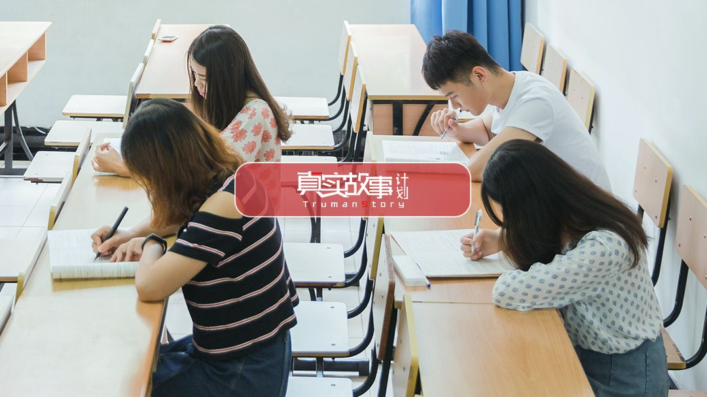
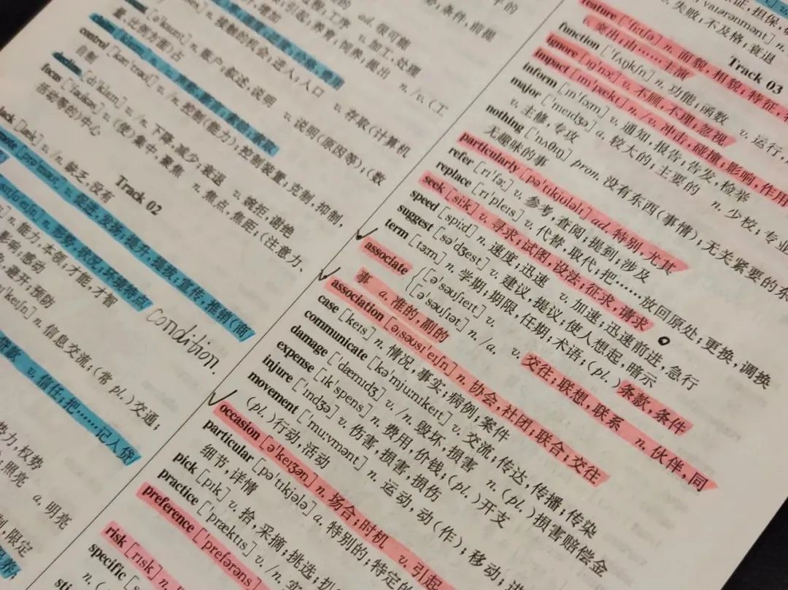
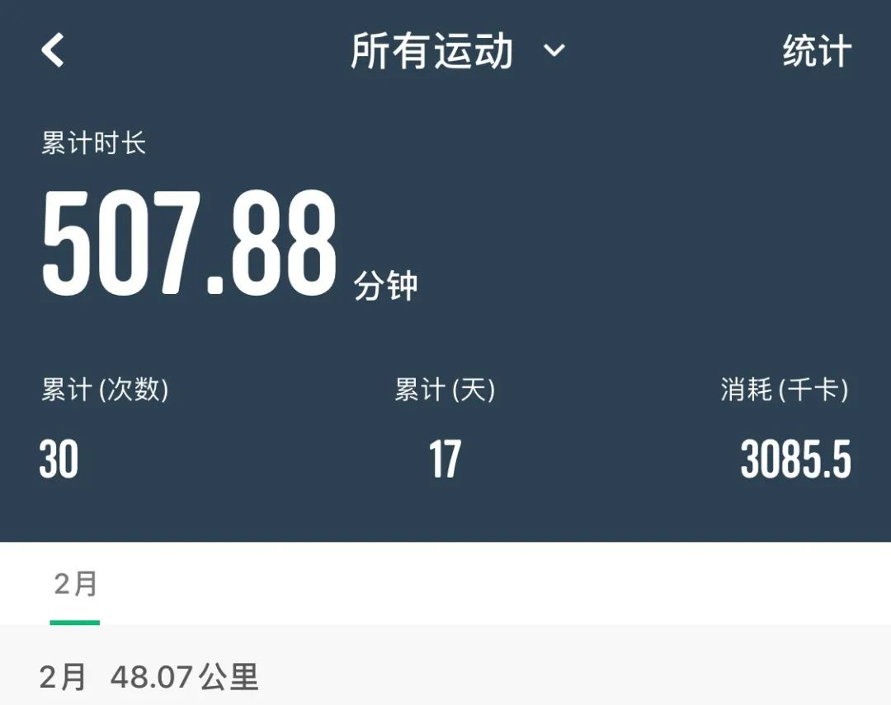
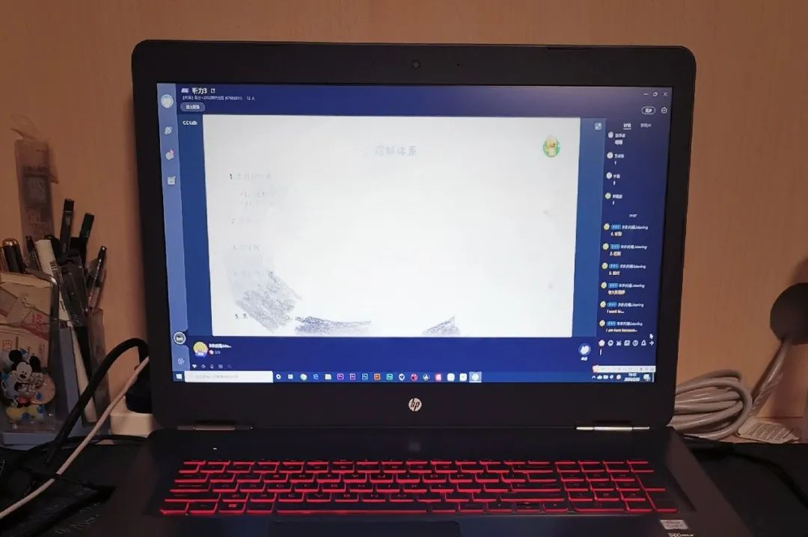

东京奥运会相关峰会被取消，英国体育官员否认接手奥运计划
原文链接 备份链接 图片来源：视觉中国 记者：罗盈盈 “ 这场体育盛会能否如期揭幕依然存在变数。 ” 新冠肺炎疫情在日本有愈演愈烈的趋势，原定今年7月揭幕的东京奥运会面临挑战。 2月21日，日本内阁官房长官菅义伟在记者会上强调，东京奥运会 …

考试是青少年们进步的阶梯。考研复试、托福、雅思、专升本，现在都面临延期或取消，这背后是数以百万计的考生们，在攀登的阶梯上忽然踏空。漫长的备考，近在眼前的终点猛然消失，这些上进的考生们该如何调整人生目标，在这段特殊的空白期，他们有着怎样的反思与改变。
王灏宇 2020届研究生入学考试考生
*考研复试推迟，我不知道怎么计划将来*
过年在家，看到疫情逐渐蔓延，媒体建议大家不要外出的消息时，我就预料到考研复试会被推迟。接到延期通知时，心情好坏参半，好的是能有更多时间准备复试，坏的是心里也更加煎熬。
决定考研是因为有些意难平，我高考时发挥失常，原本可以考上本省985学校，最后只考上了一所双非院校，所以决定利用考研拼一把。
2019届考研初试后我就了开始准备。大四时，我过着三点一线的生活。每天七点半起床，到食堂吃饭，八点一刻到图书馆学习，中午回宿舍睡半小时午觉，再回到图书馆继续学习，一直到晚上十点一刻闭馆。

图|在家复习研究生考试
为了考研，我断掉不必要的社交和所有的爱好，最爱的游戏也卸载了。有时真的很累，由内而外的疲惫，觉得生活好枯燥。
有天早上，我在食堂吃早餐，心里突然就很憋闷，喘不过气，就任性地买了一张电影票，大早上一个人跑去看了《夏目友人帐》。看完心里才舒服一点，又赶紧跑去复习。
我是典型的“拖延症患者”，完成目标需要deadline逼一把。现在复试的具体安排没有出来，我就少了紧迫感，没有目标和动力去学习。
这场疫情让正常生活充满了不确定性，原本确定的路标也没了，所以我每天都浑浑噩噩，复习的事情一拖再拖。
因为疫情，我也没法回学校。有些复习资料放在学校没带回家，复习起来就很受限。获奖证书、成绩单也都放在学校了，找导师也比较麻烦。
而且复试推迟后会撞上毕业设计，在时间上如何权衡也是一个问题。我的毕业设计有关超磁材料，我需要阅读文献、设计模型、优化模型等等，这些过程的准备跟复试准备是并行的，时间很紧迫。
现在复试的具体时间和毕业设计的相关通知都没发布，一切都是未知数，我不知道怎么计划将来，只能等。
这段时间每天晚上都失眠，一闭上眼睛，脑海里就充斥着考研复试、专业缩招、毕业设计等各种事情，很煎熬。就怕疫情好转后，生活回到日常，所有通知如期而至，我没来得及准备好。
这种心情就像在起跑线等待令枪响的运动员一样，心一直悬着，只有听到枪响，才能开始奔跑，然而枪迟迟未响。
蔡梓珊 2020届专升本考试考生
专升本考试延期后，我大哭了一场
2月8号下午，朋友发来消息：“如果推迟得太久我就不考了，反正以后也是回家工作，专科、本科也没什么区别。”
我开玩笑般回了一句：“人类的悲喜果然并不相通。”
我没有回家工作的退路，也做不到她那么洒脱，通过专升本考试是我面前唯一的独木桥。
为了这场考试，我已经准备了小半年，或者可以说更久。2017年，我从县城高中考入本省一所专科学校的财会专业。小县城教育资源并不好，许多学生和我一样，努力了三年只能考上普通大学或专科，毕业后匆匆工作，很少有人继续深造。
入学后，我经常会刷微博和知乎，有时觉得自己和网上的同龄人生活在两个世界，我羡慕他们能在名校接受教育，拥有更广阔的视野。再加上随便一家公司招聘都要本科以上学历，所以我早早定下参加专升本考试的计划。
大一时我很少缺课，到了大二我很早便开始准备英语，因为基础很差，也没有钱参加课外辅导，我只能用最笨的方法每天坚持早读、背单词、做习题。
有时看到网上有人说专升本考试很水，英语也不过是四级难度，我心里难免难过。像我这样农村出身的学生，想弥补教育差距，是要用尽全力的。

图|英语单词册
为了专升本考试，我成了图书馆常客，同学们休息时常会出去逛街，我从没参与过。其实我最羡慕的还是节假日能去做兼职的人，每天一两百块钱，能为家里减轻不少负担。
可是2月刚开始，备考群里就流传着考试可能会延期的推测，各种小道消息传来传去，看得我心慌。当时已经有各类考试延期的公告陆续发布，我不知道专升本是否会受影响，如果延期了我要如何应对。
我在不确定的状态下挣扎了几天，每天都会搜索考试和疫情的相关消息，期盼着有天醒来能看到疫情彻底结束，一切照常进行。
毕竟如果考试延期，各种变数都会增加，我不确定自己能否稳住心态，也不知道如果考不上，马上就要毕业，我拿着一张专科证书怎么找工作。
2月8号，同学往群里发了一张公告截图，说是考试确定延期，具体时间未定。我立刻跑到电脑前，一看到招生官网上的通知就哭了。
我也不知道自己怎么了，也许是多日的忐忑终于等到结果，也许是这几天一直看新闻心里太压抑，眼泪止不住地往下掉。
群里消息不断，有人担心如果拖的时间太长和毕业撞车，有人抱怨耽误了他接下来的计划，还有人庆幸地说：“还好延期了，我还没背完呢。”
朋友私聊问我心情怎么样，有什么打算？我想了想只能告诉她：“太突然了，有点懵，还不知道接下来怎么办。”
确定的考试时间突然被推迟，就像下楼梯时突然踏空，心里难免会闪一下。准备了这么久，考试近在眼前又消失，给人感觉空落落的，不知道该去哪里抓把手。
那天晚上，我想了很久，还是在朋友圈发了一句话：“有人住高楼，有人在深沟，继续努力，不能回头。”
周婉清 2020届国家公务员考试考生
*疫情后，我想成为一名公务员*
前几天戴着口罩在小区里跑步，因为呼吸倒不过来我差点晕倒。如果不是这场疫情，我应该正在附近中学的操场上正常训练。
我将在今年6月份毕业，因为家里人从事警察工作，我一直觉得警察类职业很正义，所以去年10月份报考了国家公务员考试的警察岗位。
警察岗位相较于其他岗位多了体能考核这一关，我身体素质不太好，从小就不爱运动，大学体测800米是我每年一度的噩梦。因为这个，报考时身边朋友都很惊讶，但我家里人很支持。
1月8号通过笔试后，我开始有计划地训练体能，准备2月参加第二轮面试考核，再参加体能测试，如果都顺利通过，体检之后就可以入职了。
一月中旬，和朋友聊天说到“武汉肺炎”，我们还觉得这事很遥远。没想到十几天后我突然收到通知：国考面试要推迟了。
常规来说，2月中旬面试会陆续开始，但现在一切以抗疫为主，新的面试时间还不确定。
之前的复习计划要因此重新安排，而且不知道新的面试通知何时下发，会不会很突然，不知道自己还有多少复习时间，这让我有些被动。
为了这场考试，我从大三下学期开始准备，上午学行测，下午做申论，晚上听解析课，每天能学10小时，同时还要抽空去跑步。
有一个月我的成绩突破不了，吃饭时越想越害怕突然哭了起来。家里人安慰我，把考试当作尽力去做的一件事就好，第一次可以当做经验积累。他们的话给了我很大的鼓励，心态稳定下来，成绩才渐渐有了突破。
但现在因为疫情，我只能待在家里，看线上课程，做面试准备，戴着口罩做体能训练。

图|体能训练记录
我现在基本每天跑3公里，有时候会加上800米的训练。因为新的考试公告还没出，也不知道体能测试有没有变化，我都还是以长跑为主。
也考虑过如果面试失败该怎么办，我想我会继续考公务员。我本身是认定了要做一件事就要努力去达成它的人，我把这视为对自己能力的挑战和证明，不希望自己因为一次失败就放弃这个选择。
张乐山 原2020年3月份托福考试考生
托福五月再考，我必须一击即中
三月这场托福考试是我出国读研计划中的一环，一旦打乱，后续会造成一堆麻烦。
出国读书这件事，一方面是家里的想法，另一方面也是我专业上的需求。我学的是数媒影视，无论未来做导演方向，还是特效方向，乃至于制片、营销等等，去美国读书都是最好的选择。
为了能顺利录上理想的院校，我大三就开始准备。语言是比较难过的一关，去年十月中旬，我开始准备托福考试，今年一月份考了第一次，想先体验一下考试环境和真题，再对照第一次的成绩，反省哪一项需要着重关注，哪一项只需稍作补充。

图|正在进行的托福网课
第一次考完，我知道了自己的水平和问题，接着就报了三月的托福考试，打算第二次能冲多高冲多高。为此，我还报了语言班做全面冲刺，准备在三月一次考到满意分数。如果一切顺利，之后就能有更充足的时间，去准备其它申请材料。
但是这个疫情一来，全国的考试都停了。
二月中旬，我看到雅思发公告说二三月份考试取消，当时有点慌，怕托福也一样，但还是抱着侥幸心理。接着就有同学告诉我，他三月的托福考试已经被取消了，我感觉不妙，赶紧去查了托福四月和五月的考位。
所幸五月初还有考位，我立刻报上了名。没过多久，托福官方取消了二三月份的所有考试。现在报名，六月份的考位也没有了。
这次考试取消让我挺迷茫的。因为理论上讲今年10到11月，国外学校就开始申请材料投递了。如果按之前的计划，3到5月之间语言准备这块就应该结束了，剩下半年时间可以更充分地刷实习经历以及准备申请材料。
现在这个情况，五月再考托福，我必须一击必中。因为下半年我还需要上本科阶段最重要的课程，完成一部20分钟的摄影作品，很耗时间精力，而且实习动辄两三个月，时间很紧凑。
准备托福本身就比较占时间，如果五月后还需要再考的话，身上压力就很大。
如今在家待着，不能考试，实习计划也泡汤了。原本想报个线下课程，现在也只能报线上一对一的语言课，在家继续学习。我的语言基础不太好，如果不投入大量时间去巩固和提高，是没办法拿到理想分数的。
我是那种喜欢按照计划一步步去完成的人，现在计划被耽搁，也不知道什么时候能回到正轨，还是有些迷茫。但也没有别的办法，也只能先把眼下的事情做好。
杨盐 原2020年3月份雅思考试考生
得知雅思考试取消，我居然松了口气
知道雅思考试取消的那一瞬间，我居然下意识地松了一口气，毕竟我还没准备好。
1月27日，雅思中国官网发布消息称，受疫情影响，取消大陆地区1月31日至2月的所有各类雅思考试，当时我就觉得3月份考试可能也会受影响。2月14日，考试取消的通知果然下来了。
刚上大学时，爸妈每天在我耳边念叨“什么雅思、托福考试，你都要试一试啊”。他们可能不知道这些考试具体有什么区别，但身边朋友的孩子都在考，他们怕我落下。
再加上学姐学长也在说这类考试越早越好，我就报名了今年的雅思，想着不管怎么样，先试一下。
周围同学有出国意向的，一直都在努力备考，很多大三的朋友白天在社团、实习单位工作，晚上回来还要各种练习、刷题、听网课，节假日都恨不得住图书馆里。我听说还有学姐因为连轴转，压力又太大，直接晕倒在寝室。
和他们相比，我的备考生活要轻松很多，有空时刷刷习题，练练口语，累了就休息。我才大二，还没有申请学校的压力，总觉得来日方长，下一次再认真准备也来得及。
但这次疫情的发生，改变了我很多想法。
一方面，身边朋友都在哀嚎，有人雅思成绩不过关，学校递交材料的截止日期就要到了，她报了二月的两场考试，结果都被取消，急得不知道怎么办好。还有人认真准备了很长时间，结果被突然取消弄得没办法，已经在研究怎么去国外考试。
看着他们的样子，我难免会代入自己，这次我吊儿郎当地备考，不想面对自己的成绩，反而庆幸考试取消，不用直面现实。但如果我也正处在一个关键的时间节点上，碰到考试被取消，还能悠哉悠哉地松一口气吗？
以前我总爱跟朋友开玩笑，他们都觉得我特别“嘴损”，但这次我是真的知道了什么叫无奈。有朋友来跟我抱怨，我都会耐心地陪他们说话，和他们一起想办法。
另一方面，武汉的事情开始让我觉得自己是个“幸存者”。因为我不在湖北，我没有生病，所以每天还能为一些小事开心、生气，而那些离开的人已经没有机会了。
也许关于人生的考试，真的没有那么多下一次吧，我想还是要认真抓住每一天。
-———————————————————————-
本期策划｜王梓涵 马延君

原文链接 备份链接 图片来源：视觉中国 记者：罗盈盈 “ 这场体育盛会能否如期揭幕依然存在变数。 ” 新冠肺炎疫情在日本有愈演愈烈的趋势，原定今年7月揭幕的东京奥运会面临挑战。 2月21日，日本内阁官房长官菅义伟在记者会上强调，东京奥运会 …
原文链接 备份链接 日本国内新冠病毒感染者近日连续增多，一些地方相继报告了无法确定感染途径的病例。日本厚生劳动省昨天（17日）表示，停靠在日本横滨港的“钻石公主”号邮轮又新增了99名新冠肺炎病例，累计已达454例。鉴于形势日益严峻，日本 …
原文链接 备份链接 今天是情人节。而不久之前，身份都是医生的陈政博、辛奇遥，选择先在家人微信群中举行了特别的视频婚礼。 这对战疫一线的新人终成眷属，陈政博说，待疫情结束，春暖花开，他会给妻子再补上一场最浪漫的婚礼。 口述 | 陈政博 整 …
原文链接 备份链接 新冠病毒疫情蔓延对已在海外就读的中国留学生造成影响，准备今年申请出国留学的中国学生也面临考试计划调整，即使通过考试并申请到入学机会，他们能否在今年夏天顺利入境澳大利亚等目的国，目前也充满变数 文 |《财经》 …
原文链接 备份链接 滞留的剧组成员（左二为邵进）。图片由受访者提供 _“有一天，快到中午的时候，我在电梯里碰到刚下班的护士们。那是几个90后女孩，正在讨论是先洗澡还是先吃泡面。一个女孩说，肯定要先洗澡，因为要除菌嘛。另一个女孩说，可是真的 …